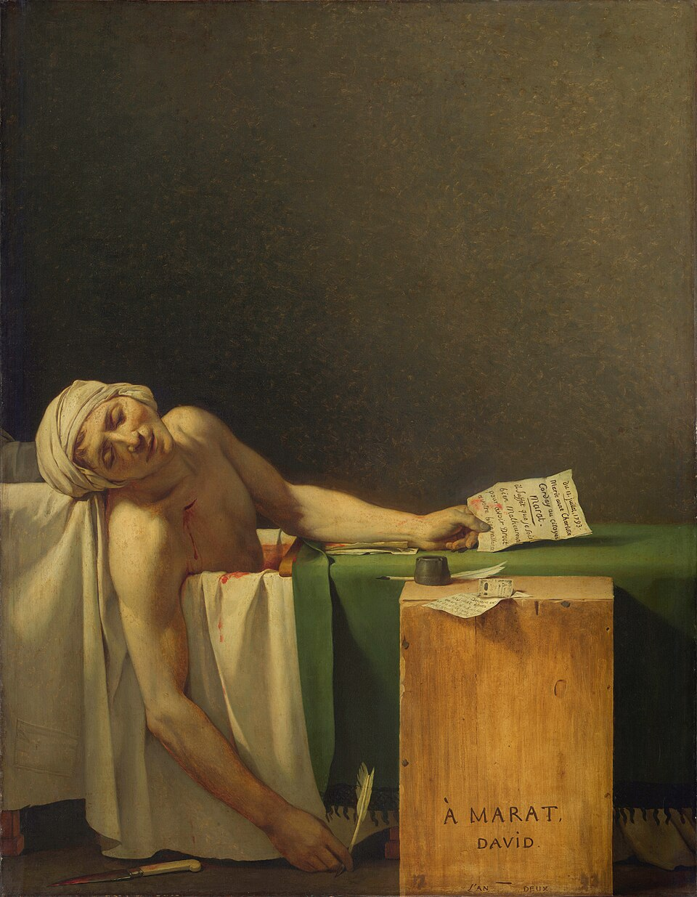
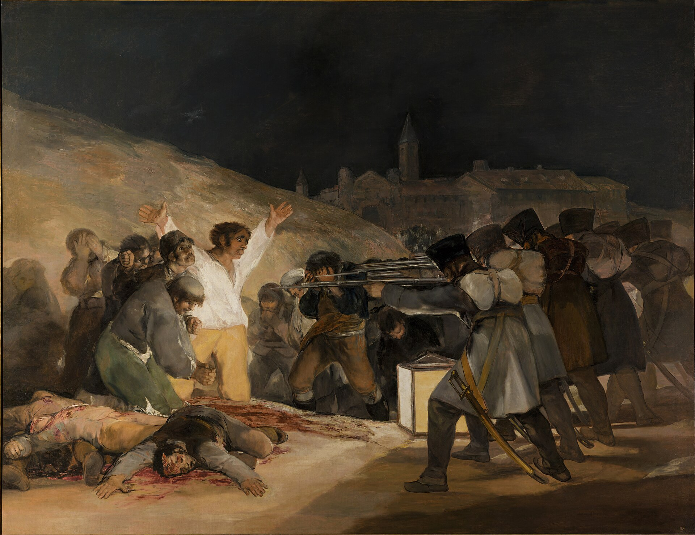

DUE OPERE / OTTO DOMANDE / IL TUO SGUARDO
Due modi di guardare
la morte.
Un uomo è appena morto. Un altro sta per morire.
Due immagini di violenza politica. Due modi di trasformare la storia.


PRIMA GUARDARE. POI DARE UN NOME.Un percorso di circa 25–35 minuti
01 / OSSERVARE INSIEME
Le immagini, sotto interrogatorio.
0 di 8 confronti esplorati
Alterna le opere sullo stesso dettaglio
Ingrandisci con + e −, trascina per esplorare. Touch: pizzica con due dita. Tastiera: frecce per spostarti, + e − per lo zoom, 0 per tornare all’intero. I punti si possono scegliere anche dall’elenco.
COSA NOTI?
INTERPRETA E CONFRONTA
Goya
Il contesto, quando ti serve
Parigi, 13 luglio 1793
Jean-Paul Marat è un giornalista e deputato rivoluzionario, vicino ai montagnardi e protagonista di uno scontro politico aspro. Charlotte Corday, ostile al suo ruolo nella radicalizzazione rivoluzionaria, lo uccide nella vasca da bagno. David, deputato alla Convenzione e impegnato nella Rivoluzione, ne dipinge la morte nello stesso anno: la rappresentazione partecipa alla costruzione di un martire politico, senza essere un giudizio neutrale su Marat.
Madrid, 1808. La tela, 1814.
Durante l’occupazione napoleonica, l’insurrezione del 2 maggio a Madrid viene repressa. Le esecuzioni iniziano già quel giorno e proseguono nella notte e il 3 maggio. Goya dipinge le due grandi tele del 2 e del 3 maggio nel 1814, nel contesto del ritorno di Ferdinando VII. Non sappiamo che abbia assistito a questa specifica scena: l’opera costruisce una memoria degli eventi.
UN’IMMAGINE, TRE TEMPI
Metti il tempo al suo posto.
Per ogni momento scegli un gruppo nella tela di Goya. Il confronto porta lo zoom sulla zona scelta.
02 / DARE UN NOME
Hai già incontrato le differenze.
Attraversa gli otto confronti e metti alla prova un’ipotesi in ciascuno. La sintesi prenderà forma qui.
Ora possiamo dare loro un nome. Non una gabbia.
Neoclassicismo
In David riconosciamo una ricerca di chiarezza, selezione e forma esemplare, legata al confronto con l’antico. In questa tela contemporanea quel linguaggio costruisce una memoria politica, anche attraverso echi dell’arte cristiana. Il Neoclassicismo non coincide però con una sola ideologia: precede la Rivoluzione e attraversa committenze e regimi diversi.
Romanticismo
La tensione, la vulnerabilità dei corpi e il coinvolgimento dello spettatore avvicinano Goya a sensibilità che associamo al Romanticismo. Ma Goya attraversa la cultura dei Lumi, la corte, la guerra e la critica sociale: chiamarlo soltanto «romantico» nasconde questa complessità. Il sentimento non esclude il pensiero.
| Osservazione | David | Goya |
|---|---|---|
| Corpo | Un individuo reso esemplare | Una figura dentro un destino collettivo |
| Violenza | Una traccia concentrata | Conseguenze fisiche in primo piano |
| Responsabili | Assassina assente, tracce presenti | Plotone presente, individualità oscurate |
| Spazio | Selezione ed essenzialità | Densità di relazioni narrative |
| Tempo | Il dopo, aperto alla memoria | Già morto, sta per morire, attende |
Entrambi trasformano la realtà.
Nessuno dei due la fotografa.
David rende una morte oggetto di commemorazione e persuasione politica. Goya rende l’esecuzione un’esperienza visiva che può suscitare orrore e interrogare la violenza organizzata. Entrambi scelgono, ordinano, simboleggiano e cercano il nostro coinvolgimento.
03 / IL TUO SGUARDO
Adesso sostieni quello che vedi.
Non basta riconoscere il pittore. Ogni interpretazione ha bisogno di un indizio.
A. Riconosci
B. Confronta
Una traccia per rivedere la risposta
Hai distinto Corday, individuo assente ma identificabile, dal plotone presente e anonimo? Hai richiamato lettera o coltello e, dall’altra parte, uniformi, schiene o fucili? Hai spiegato l’effetto sullo spettatore, senza attribuire intenzioni certe che non possiamo dimostrare?
C. Interpreta
Rileggi con questi criteri
- Ho formulato una tesi, non soltanto espresso una preferenza.
- Ho citato almeno due dettagli precisi e ne ho spiegato la funzione.
- Ho distinto osservazioni, interpretazioni e dati storici.
- Ho riconosciuto che anche Goya usa simboli e anche David coinvolge emotivamente.
Questa è un’autovalutazione: il testo aperto non riceve un voto automatico. Puoi discuterlo con il docente o con la classe.
Un’opera d’arte deve farci capire un evento
oppure farcelo sentire?
Forse la domanda più utile è: come ci fa pensare attraverso ciò che ci fa vedere e sentire?
Le risposte restano nel browser. Non vengono inviate a un server.
PER CONTINUARE A GUARDARE
Fonti e approfondimenti
- Musées royaux des Beaux-Arts de Belgique — scheda di Marat assassiné
- Louvre — Marat, un’icona della Rivoluzione
- Museo del Prado — Il 3 maggio in Madrid
- Museo del Prado — guida alla lettura accessibile
Immagini: i due file originali forniti da gbprof, conservati localmente senza ritagli. David, 960 × 1235 px; Goya, 1920 × 1480 px. Opere in pubblico dominio. Testo di partenza e tre video: materiali forniti da gbprof. Il confronto propone letture motivate delle opere, non categorie universali.
Uso offline e accessibilità
Dopo il primo caricamento completo, opere, percorso e attività sono disponibili senza connessione. I video vengono caricati solo su richiesta e richiedono la rete. Su iPad puoi usare Condividi → Aggiungi alla schermata Home. I controlli dello zoom e gli elenchi dei dettagli sono utilizzabili da tastiera. Le descrizioni testuali accompagnano l’esplorazione visiva.
Preparazione della lettura offline…